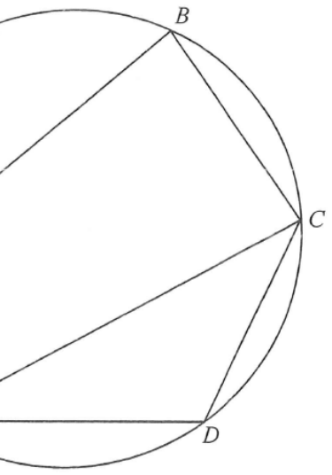

HKDSE 2020 · Paper 2 · Q22Geometry · Circle · Cyclic QuadrilateralAnswer: C (7 cm)
Interactive Diagram Step 1
Circle ABCDEGiven sides AB, BCChord AC (√125 cm)Chord CD (unknown)Chord ED & ∠CED = 40°Right angle at B / D
Step 1: Right-angled $\triangle ABC$ with $AB=10$, $BC=5$ — find the hypotenuse $AC$.
Question & Worked Solution
Question
In the figure, $ABCDE$ is a circle. If $AB = 10\text{ cm}$, $BC = 5\text{ cm}$,
$\angle ABC = 90^\circ$ and $\angle CED = 40^\circ$,
find $CD$ correct to the nearest cm.
A. 5 cm
B. 6 cm
C. 7 cm
D. 8 cm

Figure (original exam diagram)
Step 1 · Find the chord AC
In $\triangle ABC$, $AB=10$ and $BC=5$ with $\angle ABC = 90^\circ$. By Pythagoras' theorem:
$\sqrt{125} \approx 11.18$ cm — the diameter candidate of the circle, since $AC$ subtends a right angle at $B$.
💡 Hint: A right angle at a point on the circle means the opposite chord is a diameter — so $\angle ADC$ will also be $90^\circ$.
Step 2 · Angle in a semicircle: ∠ADC = 90°
Since $\angle ABC = 90^\circ$ and $A,B,C$ lie on the circle, $AC$ is a diameter. Hence the angle in the semicircle at $D$:
$$\angle ADC = 90^\circ$$
(Equivalently: $ABCD$ is a cyclic quadrilateral, so $\angle ADC = 180^\circ - \angle ABC = 180^\circ - 90^\circ = 90^\circ$ — opposite angles of a cyclic quad are supplementary.)
💡 Hint: Both routes give the same fact — pick whichever you remember faster in the exam.
Angle in a Semicircle\(\angle\text{ in semicircle}=90^\circ\)\(\angle ABC=90^\circ\) makes \(AC\) a diameter, so the angle at \(D\) is also \(90^\circ\).
Step 3 · Angles in the same segment: ∠CAD = 40°
$\angle CAD$ and $\angle CED$ are angles in the same segment (both subtend the chord $CD$):
$$\angle CAD = \angle CED = 40^\circ$$
(Angles in the same segment of a circle are equal.)
💡 Hint: Look for the shared chord $CD$ — the two equal angles must "see" that same chord from the same side.
Angles in the Same Segment\(\angle CAD=\angle CED\)Both angles stand on the chord \(CD\), so \(\angle CAD=40^\circ\).
Step 4 · Right-angled triangle ACD → find CD
In the right-angled $\triangle ACD$ (right angle at $D$), with hypotenuse $AC = \sqrt{125}$ and $\angle CAD = 40^\circ$:
$$\sin \angle CAD = \frac{CD}{AC} \;\Rightarrow\; CD = AC \sin 40^\circ$$
💡 Hint: $CD$ is opposite the $40^\circ$ angle, and $AC$ is the hypotenuse — so use sine, not cosine.
Sine Ratio\(\sin\theta=\dfrac{\text{opposite}}{\text{hypotenuse}}\)In right triangle \(ACD\), \(CD=\sqrt{125}\sin40^\circ\approx7.19\), which rounds to \(7\) cm.
Summary of key facts used
Pythagoras: $AC = \sqrt{10^2+5^2} = \sqrt{125}$ cm.
Same segment: $\angle CAD = \angle CED = 40^\circ$.
Right triangle: $CD = \sqrt{125}\sin 40^\circ \approx 7.19 \to 7$ cm.
PRACTICESimilar question — try it yourself
Question. \(A,B,C,D,E\) lie on a circle. \(AB=8\text{ cm}\), \(BC=6\text{ cm}\) and \(\angle ABC=90^\circ\). Given that \(\angle CAD=\angle CED=35^\circ\), find \(CD\) correct to the nearest cm.
Show the worked solution
Step 1. \(AC=\sqrt{8^{2}+6^{2}}=\sqrt{100}=10\text{ cm}\), and \(AC\) is a diameter.
Step 2. Angle in a semicircle: \(\angle ADC=90^\circ\).
Step 3. Angles in the same segment: \(\angle CAD=\angle CED=35^\circ\).